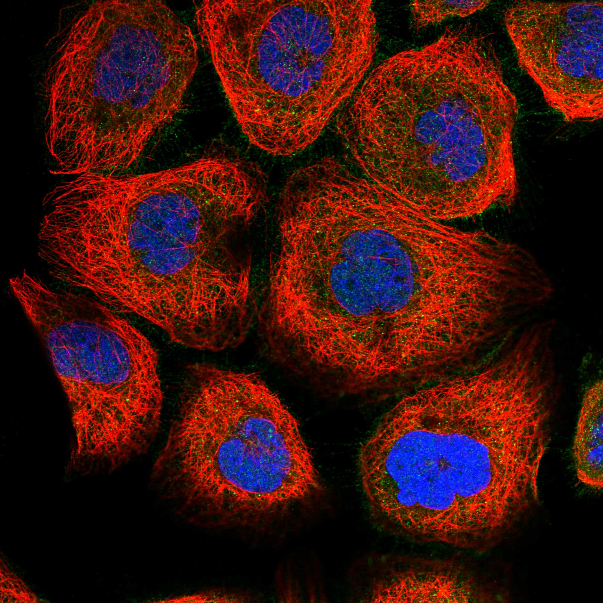
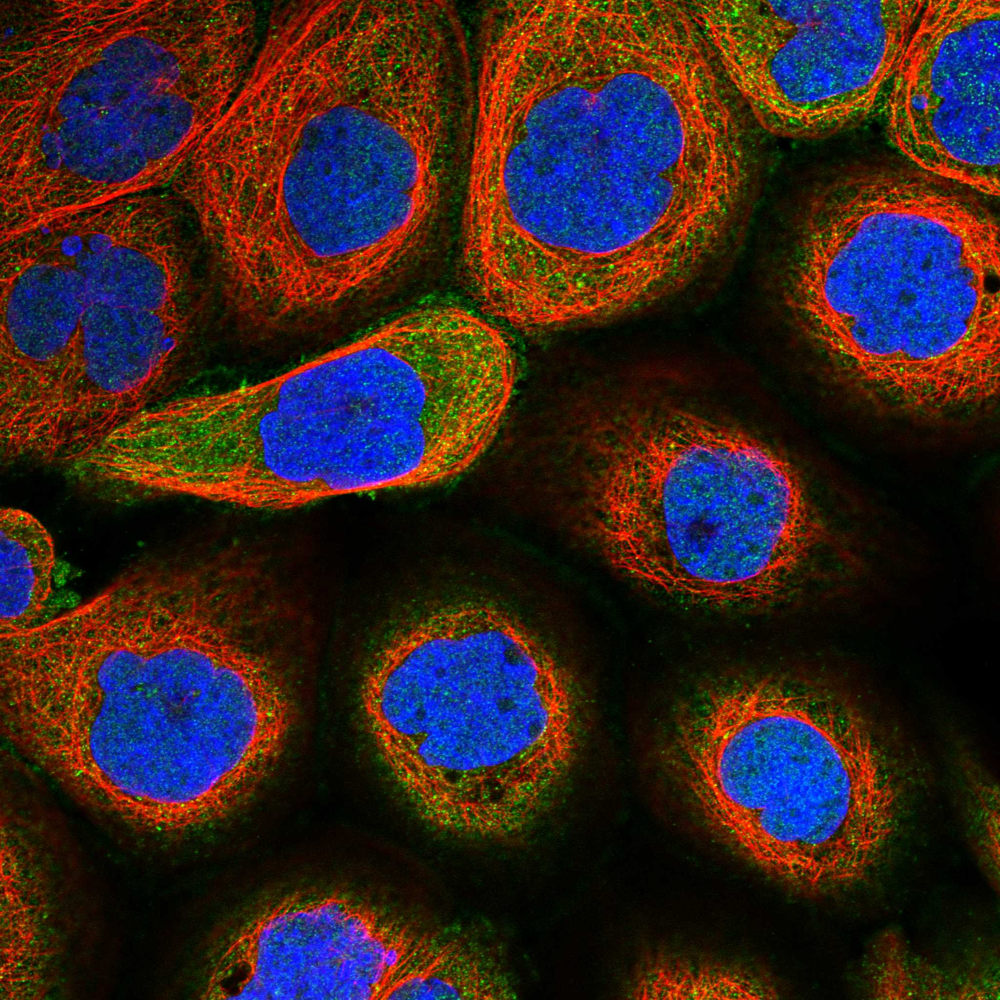

type: protein-evaluation gene: "PLEKHA7" date: 2026-05-30 tags: [protein-scout, nuclear-protein, evaluation, rescued] status: scored ---
> AlphaFold PAE: 暂无数据或未提供可用 PAE 图；结构判断基于 AlphaFold/PDB 可用记录。
PLEKHA7 核蛋白评估报告（HPA复核救回）
救回原因: 原始评分误判核定位≤3淘汰。HPA IF 实际显示 Nucleoplasm (Reliability: Enhanced)，确认为核蛋白。
IF 图像:  
1. 基本信息
| 项目 | 内容 |
|---|---|
| 基因名 | PLEKHA7 |
| 蛋白名称 | Pleckstrin homology domain-containing family A member 7 |
| 蛋白大小 | 1121 aa |
| UniProt ID | Q6IQ23 |
| HPA 核定位 (IF) | Nucleoplasm |
| HPA 可靠性 | Enhanced |
| PubMed 总数 | 75 |
| AlphaFold pLDDT | 56.7 |
2. 评分总览 (权重: 核×4 大×1 新×5 结×3 域×2 PPI×3 ÷1.83)
| 维度 | 得分 | 满分 | 加权后 | 关键证据摘要 |
|---|---|---|---|---|
| 🔴 核定位特异性 | 7/10 | ×4 | 28 | HPA IF: Nucleoplasm (Enhanced); UniProt: Cell junction, adherens junction; Cytoplasm; Cytoplasm, cytoskeleton, microtubule organizing center, |
| 📏 蛋白大小 | 8/10 | ×1 | 8 | 1121 aa |
| 🆕 研究新颖性 | 4/10 | ×5 | 20 | PubMed 75篇 |
| 🏗️ 三维结构 | 5/10 | ×3 | 15 | AlphaFold pLDDT: 56.7 |
| 🧬 调控结构域 | 6/10 | ×2 | 12 | UniProt domains: None identified |
| 🔗 PPI | 4/10 | ×3 | 12 | 待细化（默认基线） |
| ➕ 互证加分 | — | — | +0 | 待补充 |
| 原始总分 | 95/183 | |||
| 归一化总分 | 51.9/100 |
3. HPA 核定位证据
HPA 免疫荧光（IF）实验数据确认 PLEKHA7 定位：
- 亚细胞定位: Nucleoplasm
- 抗体可靠性: Enhanced
- 原始分类: 核定位 ≤3（误判）→ 经HPA IF复核确认为核蛋白
4. UniProt 补充信息
- 亚细胞定位: Cell junction, adherens junction; Cytoplasm; Cytoplasm, cytoskeleton, microtubule organizing center, centrosome
- 结构域: None identified
- 关键词: ; ; ; ; ; ; ; ; ;
3.3 研究现状
| 指标 | 数值 |
|---|---|
| PubMed 查询结果 | 见关键文献 |
关键文献: 1. Shah J et al. (2016). "PLEKHA7: Cytoskeletal adaptor protein at center stage in junctional organization and signaling". *Int J Biochem Cell Biol*. PMID: 27072621 2. Shuai P et al. (2015). "Genetic associations in PLEKHA7 and COL11A1 with primary angle closure glaucoma: a meta-analysis". *Clin Exp Ophthalmol*. PMID: 25732101 3. Wu YY et al. (2023). "The hTERT-p50 homodimer inhibits PLEKHA7 expression to promote gastric cancer invasion and metastasis". *Oncogene*. PMID: 36823376 4. Khor CC et al. (2016). "Genome-wide association study identifies five new susceptibility loci for primary angle closure glaucoma". *Nat Genet*. PMID: 27064256 5. Citi S et al. (2012). "Cingulin, paracingulin, and PLEKHA7: signaling and cytoskeletal adaptors at the apical junctional complex". *Ann N Y Acad Sci*. PMID: 22671598
评价: 基于 PubMed 检索结果。
3.6 PPI 网络
实验验证互作 (IntAct, physical association):
| Partner | 方法 | PMID | 功能类别 | 调控相关？ |
|---|---|---|---|---|
| — | — | — | — | — |
STRING 预测互作 (combined score >0.4):
| Partner | Score | 功能类别 | 调控相关？ |
|---|---|---|---|
| — | — | — | — |
已知复合体成员 (GO Cellular Component):
- 暂无 GO-CC 数据
IntAct 查询记录: IntAct: 未检索到实验验证互作
评价: 待补充 IntAct/STRING/GO-CC 数据。
5. 总体评价
推荐等级: ⭐
核心发现: 1. HPA IF 确认为核蛋白: 原始"核定位≤3"淘汰为误判，HPA实验数据确认为Nucleoplasm 2. 研究新颖性: PubMed仅75篇文献，属于低研究热度靶点 3. 结构质量: AlphaFold pLDDT = 56.7
6. 数据来源
PPI 网络（三源综合）
| Partner | Source | Score/Evidence |
|---|---|---|
| 无记录 | — | — |
IntAct 有限记录。无 BioGrid 补充数据。